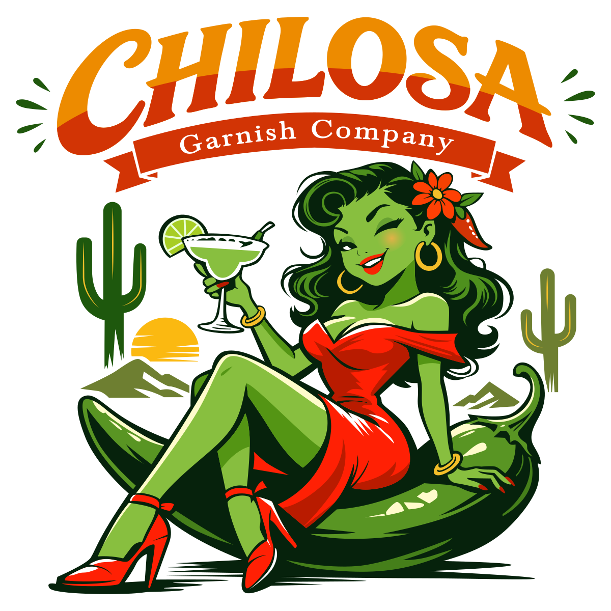
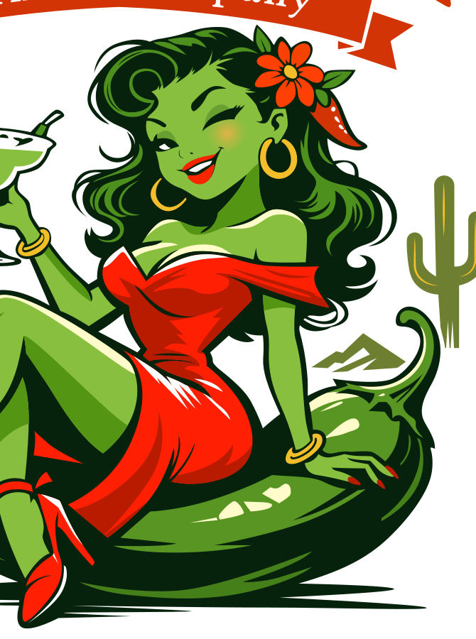

Easygoing. Never boring.
For the ones who like flavor first — with just enough attitude to get noticed.

 REAL CHILOSA
REAL CHILOSAWITH ATTITUDE.
PSSSST...
There’s more to Chilosa than meets the eye.
Follow the clue↓
THE CHILOSA SECRET
But your Mexican seasoning blend can be.
A little chile. A little citrus. A whole lot of attitude. Chilosa is made for the rim, the plate, the snack, the cocktail — and whatever you decide needs a little more personality.
Sometimes the clue is right there on the table.

THE LINEUP
Use the real thing. The bottles below are photographed Chilosa products — not generated product art.
For the ones who like flavor first — with just enough attitude to get noticed.
Bold chile character for rims, snacks, cocktails and anything asking for a little mischief.
Seasonal drops, special finds and the flavors you weren’t expecting.
MORE CHILOSA
There’s more to Chilosa. Follow the trail for markets, recipes, new flavors, limited drops and the occasional secret.
THE ATTITUDE
Chilosa is for people who like their food, drinks and gatherings with a little more personality. Mexican-inspired flavor. New Mexico attitude.
REAL PHOTO. REAL CHILOSA.
OUR STORY
Chilosa Garnish Co. is built around bold flavor, playful energy and the kind of personality that makes people ask, “What is that?” That’s the point. Discover it. Try it. Pass the secret along.
FIND CHILOSA
Keep an eye out for products, markets, recipes, drops and new clues.